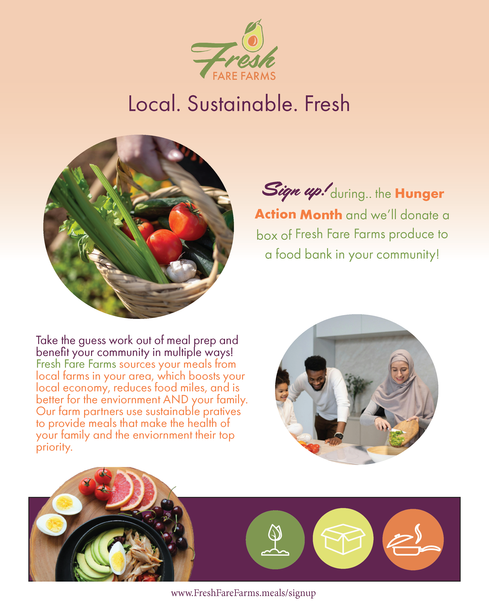

Fresh Fare Farms
A school project focused on improving a grocery experience through user research, content clarity, and easier navigation.
- Used research findings to define the real user problem before refining screens
- Focused on clearer organization, easier decision-making, and more intuitive browsing
- Practiced turning insights into a case study that is easy for recruiters to scan